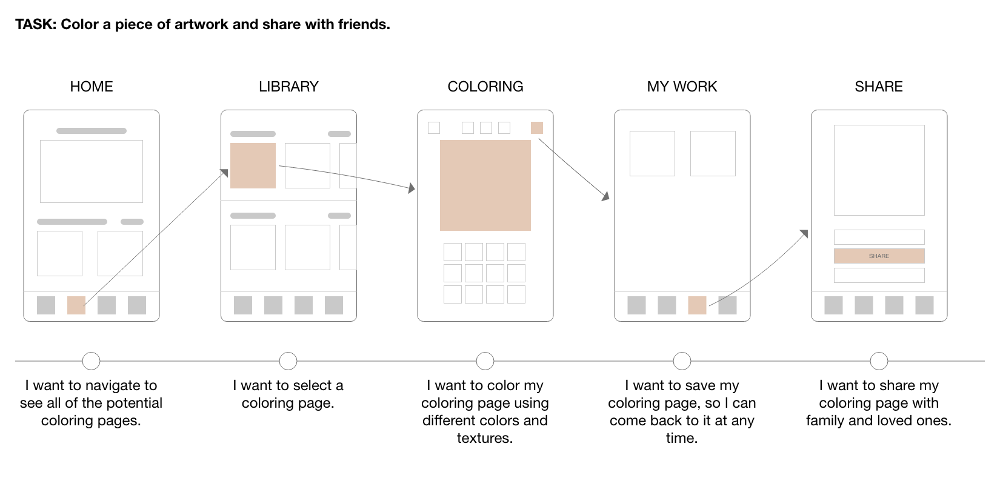

Jacquie Lawson Colouring
Add a bit of colour to your day
Jacquie Lawson started as a small British ecard business in 2002 that expanded to include games, advent calendars and much more! Known for elegant artwork, high-quality animation and music, Jacquie Lawson aspires to bring joy to their users, and with that - the colouring app was launched! Adult coloring apps are known to reduce stress and anxiety, while subsequently bringing joy while users create pieces of art.
Jacquie Lawson Colouring was created to reduce stress, prompt creativity and interact with artwork.
Role
UX Research, Journey Mapping & Wireframing
Client
Jacquie Lawson
Duration
5 months
Problem Statement
With the world remerging from the pandemic that had shuttered doors and kept people in isolation, high stress levels and increased anxiety took a toll on many indidivuals, especially impacting the older generation. These people are turning to many different methods to cope with their newfound stress - coloring being one of them.
So how can coloring help?
In a 2006 study, researchers at Thomas Jefferson University found that art therapy for women can significantly decrease symptoms of phsyical and emotional stress. Furthermore, researchers have also found that coloring complex geometric designs, such as mandalas can lead to a reduction in anxiety levels and suggests colouring may induce a meditative state.
How can we best design a mobile experience that sparks joy and reduces stress for older individuals?
Team
During this design process, I worked cross-functionally with several teams ranging from business, creative and development. On the business side, I collaborated with the product manager and to align UX goals with that of the brand. I communicated my ideas and designs to the business analysts, who documented and wrote requirements. In the design phase, I worked with two UI Designers, as well the Creative Director to ensure that the design fit our target audience and brand. We worked iteratively and I provided several low-fidelity wires and prototypes.
Process
Research
Conduct competitive analysis and present findings to product managers to determine functional requirements.
Wireframes
Low fidelity paper prototypes. High fidelity prototype using AdobeXD.
Improvements
Gather user feedback post app-launch and ideate ways to improve the user experience.
Research
During the research phase, I was directly responsible for performing a competitive audit on three similar coloring platforms. Through this audit, I captured details about the UX, navigation and features. This analysis was converted into a presentation that was then presented by the product manager to department leaders. From here, the UX team worked closely with the business team to determine the functional requirements.
Competitive Audit
User Flow
Before creating wires, our team developed the ideal flow of how a user should navigate through our app. This gave us a baseline for user testing
Solution
With our objective to bring joy and relieve stress of our current userbase, we introduced Jacquie Lawson Colouring. This app enables users to color their stress away. After completing a coloring page, they're able to further interact with this artwork by creating a puzzle out of it, or sharing it with their loved ones.
Wireframes

Final Product
Coloring As the main function of the app, coloring is made simple.
Lessons Learned
- There could have been more extensive user testing and feedback, during the gathering of requirements and creation of the prototype.
- Initially, one survey was sent out during the research phase to gather interest, however more surveys could have been sent out after the launch to gather feedback.
- A/B Testing could have been used to determine the pricing and subscription.
Conclusion
The Jacquie Lawson Colouring app launched on the Apple App Store and Google Play in October of 2021. The team is still actively gathering user feedback and iterating to create the best possible experience for our users.
Next Steps
The app has recieved high praise from users, and the development team plans to add additional features that would expand the userbase. Potential features include:
- Gallery
- Art Upload
-
This option would allow users to not only share their artwork with friends, but also foster a community within the app. Users can use this feature to get inspired and engage with others' artwork through comments.
-
Users can feel even more connected by uploading their own coloring sheets.
Thank you for exploring Jacquie Lawson Colouring! Hopeful you enjoyed this case study.